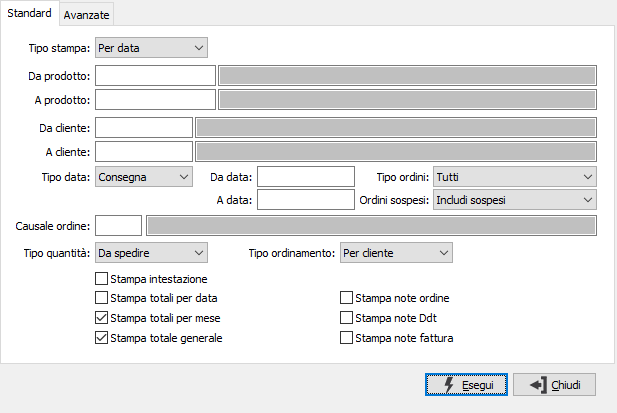
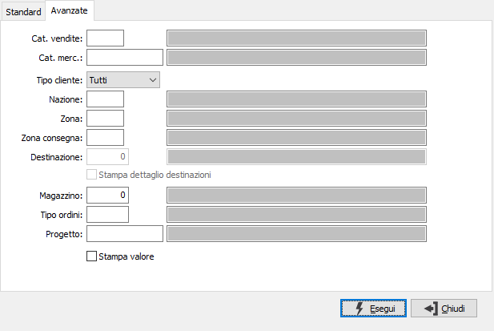

Stampa scadenzario consegne clienti
Il programma, articolato su due finestre video, provvede alla stampa di scadenzari di consegna ordinati in base al tipo stampa selezionato dall’utente.
Se presente il modulo di produzione sarà attiva, per le analisi relative alla quantità da produrre, la casella "Stampa dettaglio ODP" che consentirà di aggiungere alla stampa gli ODP attivi con il riepilogo delle quantità versate e da versare.

TIPO STAMPA: combo box per definire il tipo di scadenzario desiderato. Valori ammessi: Per data; Per cliente; Per prodotto.
DA PRODOTTO: eventuale codice dell'articolo, presente in anagrafica Prodotti, da cui si desidera iniziare la selezione di analisi. Confermando a vuoto, la selezione inizia con il primo prodotto valido. Sul campo sono attive le funzioni di ricerca (F9).
A PRODOTTO: eventuale codice dell'articolo, presente in anagrafica Prodotti, a cui si desidera terminare la selezione di analisi. Confermando a vuoto, la selezione termina con l’ultimo valido. Sul campo sono attive le funzioni di ricerca (F9).
DA CLIENTE: eventuale codice del cliente, presente in anagrafica clienti, da cui si vuole iniziare la selezione di analisi. Confermando a vuoto, la selezione inizia dal primo cliente valido. Sul campo sono attive le funzioni di ricerca (F9).
A CLIENTE: eventuale codice del cliente, presente in anagrafica clienti, con cui si vuole terminare la selezione di analisi. Confermando a vuoto, la selezione termina con l’ultimo cliente valido. Sul campo sono attive le funzioni di ricerca (F9).
TIPO DATA: combo box per definire quale fra le date presenti sugli ordini deve essere assunta come criterio di analisi. Valori ammessi: Consegna; Ordine; Richiesta; Produzione.
DA DATA: eventuale data da cui deve iniziare l’analisi dei documenti relativamente ai precedenti parametri di selezione. Confermando a vuoto, l’analisi inizia con il primo documento valido.
A DATA: eventuale data con cui si desidera terminare l’analisi dei documenti relativamente ai precedenti parametri di selezione. Confermando a vuoto, l’analisi si conclude con l'ultimo documento valido.
TIPO ORDINI: il campo è presente solo se è attivo il modulo del conto lavoro attivo; consente di specificare quali ordini si vogliono analizzare: tutti, solo quelli del conto lavoro attivo, solo ordini di vendita escludendo quelli del conto lavoro attivo.
ORDINI SOSPESI: il campo è presente solo se è attiva la gestione degli ordini sospesi, consente di specificare se nell'analisi devono essere mostrati gli ordini sospesi; può assumere i valori di Includi sospesi, Solo sospesi, Escludi sospesi.
CAUSALE ORDINE: eventuale codice della Causale ordini a cui si vuole limitare la selezione di analisi. Sul campo sono attive le funzioni di ricerca (F9).
TIPO QUANTITÀ: combo box per definire quale tipologia di quantità deve essere considerata in analisi. Valori ammessi: Da produrre; Da spedire.
TIPO ORDINAMENTO: combo box per definire le modalità di ordinamento in fase di stampa degli ordini selezionati. Valori ammessi: Per prodotto; Per cliente.
STAMPA INTESTAZIONE: indica se deve essere stampata come prima pagina del report una pagina contenente tutte le informazioni inerenti i criteri di selezione specificati per il report stesso (casella con segno di spunta).
STAMPA TOTALI PER ...: definisce se effettuare la stampa dei totali per il campo indicato (casella con segno di spunta). Nel caso di scadenzario per data il check è relativo alla data, nel caso di scadenzario per prodotto è relativo al cliente e nel caso di scadenzario per cliente è relativo al prodotto.
STAMPA TOTALI PER ...: definisce se effettuare la stampa dei totali per il campo indicato (casella con segno di spunta). Nel caso di scadenzario per data il check è relativo al mese, nel caso di scadenzario per prodotto è relativo al prodotto e nel caso di scadenzario per cliente è relativo al cliente.
STAMPA TOTALE GENERALE: check box per definire se stampare il totale generale o meno. Valori ammessi: vuoto = no; spunta = si.
Stampa dettaglio ODP: se presente la produzione e richiesta la quantità da produrre. è possibile includere in stampa il dettaglio degli ODP relativi all'ordine spuntando questa casella.
STAMPA NOTE ORDINE: check box per definire se stampare le note di ordine o meno. Valori ammessi: vuoto = no; spunta = si.
STAMPA NOTE DDT: check box per definire se stampare le note di Ddt o meno. Valori ammessi: vuoto = no; spunta = si.
STAMPA NOTE FATTURA: check box per definire se stampare le note di fattura o meno. Valori ammessi: vuoto = no; spunta = si.
Segue la seconda finestra video per l‘eventuale definizione di criteri avanzati di selezione:

CATEGORIA VENDITE: codice della categoria vendite a cui si intende limitare la selezione di analisi. Sul campo sono attive le funzioni di ricerca (F9).
CATEGORIA MERCEOLOGICA: codice della categoria merceologica a cui si intende limitare la selezione di analisi. Sul campo sono attive le funzioni di ricerca (F9).
TIPO CLIENTE: combo box per definire quale tipologia di cliente deve essere assunta come criterio di analisi. Valori ammessi: Tutti; Nazionali; Esteri.
NAZIONE: codice della categoria merceologica a cui si intende limitare la selezione di analisi. Sul campo sono attive le funzioni di ricerca (F9).
ZONA: codice della zona a cui si intende limitare la selezione di analisi. Sul campo sono attive le funzioni di ricerca (F9).
ZONA CONSEGNA: codice della zona di consegna a cui si intende limitare la selezione di analisi. Sul campo sono attive le funzioni di ricerca (F9).
DESTINAZIONE: campo attivo solo in caso di selezione di singolo cliente; codice della destinazione a cui si intende limitare la selezione di analisi. Sul campo sono attive le funzioni di ricerca (F9).
STAMPA DETTAGLIO DESTINAZIONI: check box valido solo in caso di selezione di singolo cliente, per attivare la stampa di tutte le destinazioni o meno. Valori ammessi: vuoto = no; spunta = si.
MAGAZZINO: codice del magazzino di spedizione prodotti a cui si intende limitare la selezione di analisi. Sul campo sono attive le funzioni di ricerca (F9).
TIPO ORDINI: codice della tipologia di ordine presente nelle causali ordini a cui si intende limitare la selezione di analisi. Sul campo sono attive le funzioni di ricerca (F9).
PROGETTO: campo attivo solo in caso di gestione progetti attiva; codice del progetto a cui si intende limitare la selezione di analisi. Sul campo sono attive le funzioni di ricerca (F9).
STAMPA VALORE: Se la casella è spuntata stampa anche l'importo nettissimo o il controvalore nettissimo nel caso di stampa dei totali.